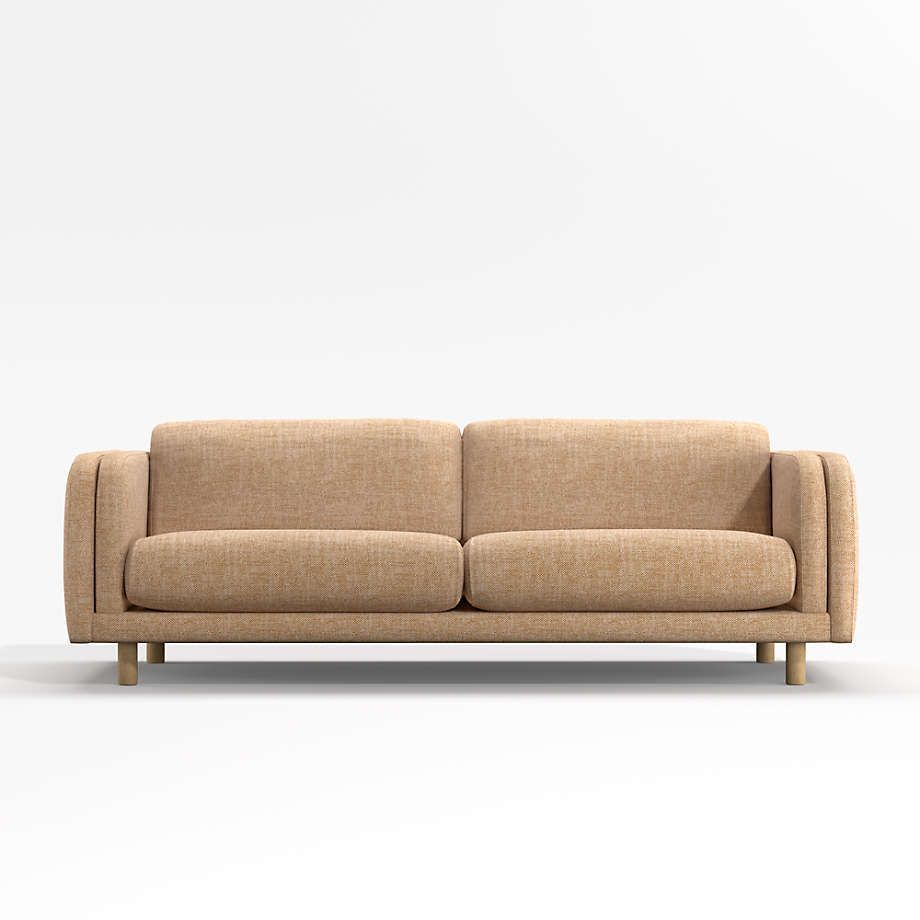
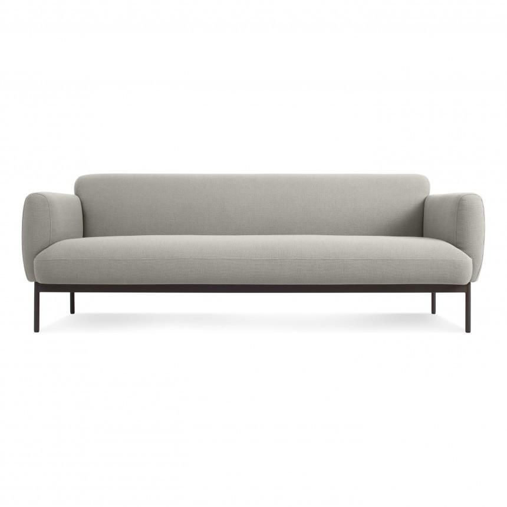

Arhaus Sofa
“Sofa ini dibuat di Italia menggunakan kulit asli berkualitas tinggi.”
Rp 25.000.000
Lulu & Georgia
“Diproduksi di Jerman dengan rangka baja tahan karat dan busa premium.”
Rp 24.000.000
Urban Outfitters
“Dirancang di Korea Selatan dengan bahan kulit sintetis tahan lama.”
Rp 23.500.000
CB2 Sofa
“Dibuat di Jepang menggunakan kayu oak solid dan kain linen impor.”
Rp 43.000.000

Wayfair Sofa
“Asal produksi dari Turki dengan balutan kain mewah.”
Rp 34.000.000

Crate & Barrel
“Dibuat di Amerika Serikat dengan material kulit sapi asli dan busa memory foam.”
Rp 17.000.000
Anthropologie green
“Diproduksi di Perancis menggunakan kombinasi kain woven dan kayu beech.”
Rp 27.000.000
Sunpan grey
“Sofa ini berasal dari Inggris dan dibuat dengan bahan kulit vegan ramah lingkungan.”
Rp 28.000.000
Anthropologie charcoal
“Dikerjakan di Tiongkok dengan bahan kulit sintetis elegan dan struktur kuat.”
Rp 24.000.000
begie coral
“Dibuat di Kanada menggunakan rangka kayu maple dan busa tahan lama.”
Rp 34.000.000
Safavieh
“Asal produksi dari Spanyol dengan sentuhan kain katun premium dan kaki besi hitam.”
Rp 21.000.000
Overstock
“Diproduksi di Swedia dengan desain minimalis dan bahan polyester daur ulang.”
Rp 35.000.000
Serena & Lily
“Dibuat di Australia menggunakan kayu eucalyptus lokal dan kain tahan noda.”
Rp 23.000.000
grey coral
“Dirancang dan diproduksi di Belanda dengan kombinasi kulit imitasi dan busa high-density.”
Rp 36.000.000